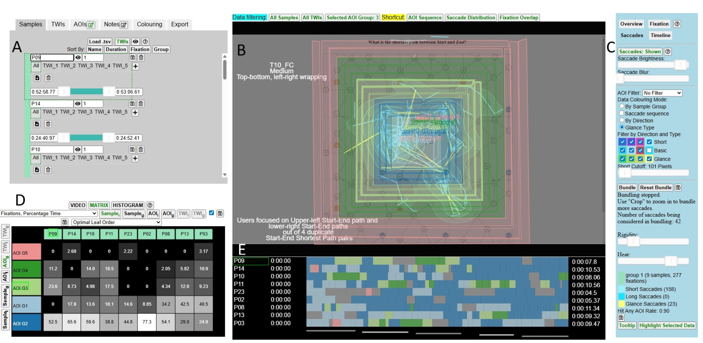

Integrating Visual Analytics into Eye Tracking Workflows: A Longitudinal Field Study

(opens in new tab)
Venue. PacificVis (2026)
Materials.
DOI(opens in new tab)
Abstract. Despite advances in Visual Analytics (VA) tools for eye tracking data, analysts often rely only on conventional visualizations and statistical tests. One key reason for this is the challenge of understanding the benefits and workflow integration of more sophisticated visual tools. To address this gap, we conducted a longitudinal study to provide an initial understanding of these potential benefits. We introduced 20 analysts to Gazealytics, a VA tool for eye tracking data, and observed their use of the tool over 2 to 12 weeks as they worked on their own tasks and datasets. Based on this study, we described the tasks, usage patterns, and scenarios observed, and identified four key benefits of VA in the context of eye tracking workflows: (1) visual difference-based hypothesis testing, (2) multiway exploratory search for insights, (3) improving data quality of recorded samples, and (4) visual dissemination and integration of results. From these findings, we derived design implications for future tools.
Link to this page: